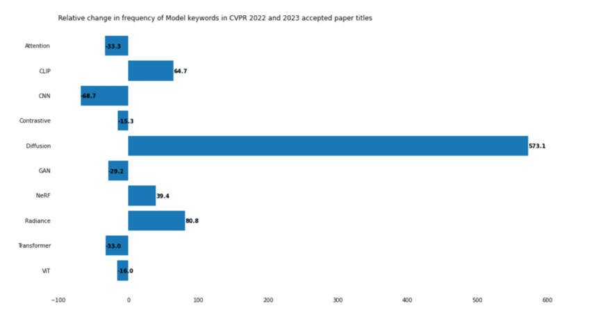
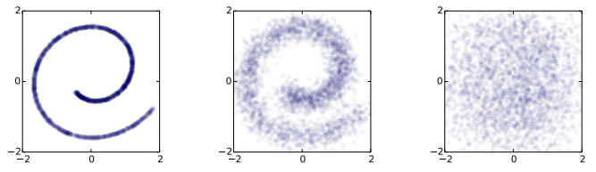
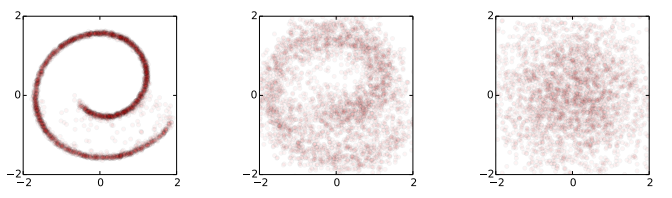
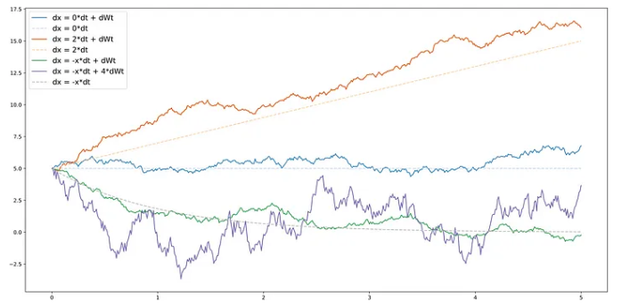
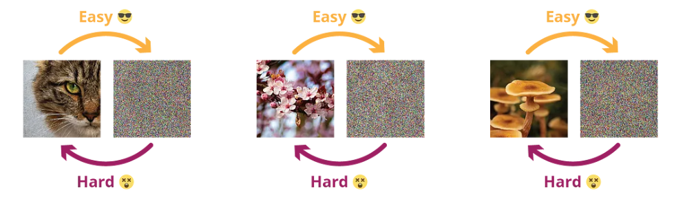
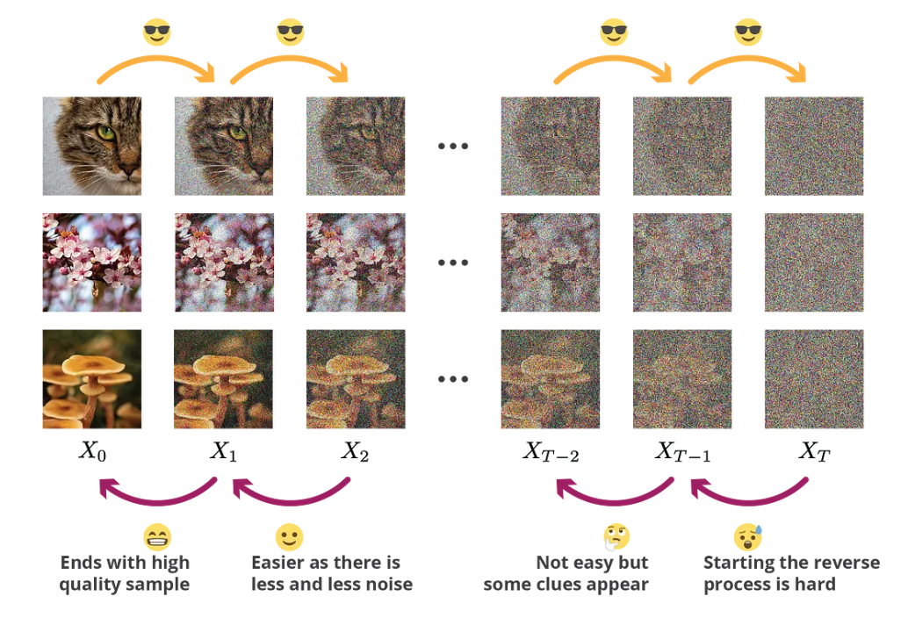
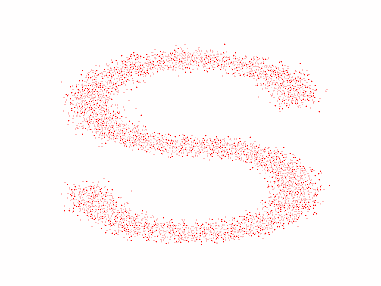

Introduction
The concept of the diffusion probability model was initially proposed by Jascha Sohl-Dickstein et al. in 2015. However, due to limitations in hardware devices such as memory at that time, this model did not receive much attention. Thanks to the development of technology, especially the advancements in GPUs and memory devices in recent years, the diffusion model has started to gain recognition.
In the past two years, the diffusion model has emerged as a generative model, and its performance has amazed people, leading to a significant increase in research efforts and the production of high-quality papers.
The graph below illustrates the increasing level of attention the diffusion model has received in 2022, showcasing its importance:

Understanding the classic paper on diffusion probability models is essential for anyone interested in working with such models. Unlike other neural networks, diffusion probability models involve a significant amount of mathematical background knowledge. This blog post aims to explain the most crucial parts of the model using simple language.
Before diving in, I would like to express my gratitude for the development of the Internet, which has allowed me to easily access high-quality blogs and videos. These resources have played a vital role in helping me understand diffusion probability models. The references to these resources are provided at the end of this post. If you find any inaccuracies or areas that need improvement in my content, please feel free to contact me via email. High-quality communication is the foundation of progress.
Diffusion process and Reverse process
The diffusion probability model consists of two main components: the diffusion process and the reverse diffusion process. To simplify the explanation (although not entirely accurate), we can illustrate it using an image. In the diffusion process, noise is continually added to the image until it becomes a completely noisy image, as shown in the figure below:

The data distribution (left) undergoes Gaussian diffusion, which gradually transforms it into an identity-covariance Gaussian (right)
On the other hand, the reverse diffusion process involves obtaining the target image from a noisy image, as depicted in the figure below:

An identity-covariance Gaussian (right) undergoes a Gaussian diffusion process with learned mean and covariance functions, and is gradually transformed back into the data distribution (left).
Diffusion process
“In probability theory and statistics, diffusion processes are a class of continuous-time Markov process with almost surely continuous sample paths.”
---- Wikipedia
This definition is like a master of ambiguity, saying everything and yet saying nothing at all, let’s attempt to dissect this definition and break it down into simpler terms.
First is the Markov process. A Markov process is characterized by its memorylessness property, which means that the conditional probability of the process depends only on its current state and is independent of its past history or future states:
Then is continuous sample paths. If all possible observed trajectories of a process can be observed as continuous, we say that it has continuous sample paths. This means that the process does not exhibit abrupt jumps or discontinuities in its observed behavior over time.
Any diffusion process can be described using a stochastic differential equation (SDE) in the following form:
where $a$ is the drift coefficient, $\sigma$ is the diffusion coefficient and W is the Wiener process. And the Wiener process introduces (continuous) randomness with independent Gaussian increments, that is:
In an alternative representation, difussion function can be written as:
that is:
As we can observe, the state at the next time step is equal to the state at the current time step plus a deterministic drift term and a stochastic diffusion term. The diffusion term is defined by a normal random variable, with the variance proportional to the square of the diffusion coefficient. Therefore, the diffusion coefficient represents the intensity of the randomness to be applied.
Here, let’s borrow an illustration from Joseph’s blog to provide a more visual explanation of the effects of the drift term and the diffusion term:

From this, we can observe that the drift term provides a trend or direction, while the diffusion term introduces randomness. A higher diffusion coefficient implies greater randomness or variability in the process. In other words, a larger diffusion coefficient leads to increased levels of random fluctuations, making the process more unpredictable and volatile.
Additionally, when the absolute value of the drift coefficient is less than 1 ($|a|<1$), it is referred to as the contracting drift coefficient.
When a diffusion process has a “contracting” drift coefficient and a non-zero diffusion coefficient, it can gradually transform data from a complex distribution to a set of independent Gaussian noises.
Here, let’s take the example of one-dimensional data, where the drift coefficient and diffusion coefficient are represented by $\sqrt{1-p}$ and $\sqrt{p}$ respectively ($p <1$). Although this is not a rigorous proof, it provides an intuitive understanding of the concept:
where $\mathcal{z}$ is Gussian Distribution $\mathcal{N}(0, \sigma)$.
Let’s further set $\sigma$ as $I$, and $(1-p)^T$ as $\overline{\alpha}_T$. that is:
Let’s write it in a more general form (just for the sake of elegance):
Now we have a relationship between $x_0$ and $x_t$.
According to the properties of the Wiener process, all the Gaussians in the diffusion term are independent. Therefore, as $T$ approaches infinity, we can obtain the following result:
(Note: Always remember, this is a Wiener process, and the Gaussians are independent.)
That is:
Given a sufficiently long period of time or a sufficiently large number of iterations, we can transform any initial input into a standard normal distribution.
Although this is 1-D situation, but the same reasoning can be extended to multidimensional data, such as images. In the context of diffusion processes in higher dimensions, such as image data, the concept of independent Gaussians still holds. Each pixel or voxel in the image can be considered as a random variable, and the diffusion process introduces independent Gaussian fluctuations to each of these variables. As time progresses, the diffusion and drift terms act collectively to transform the initial image distribution into a set of independent Gaussian distributions at each pixel or voxel. This property is crucial in various applications, including image denoising, segmentation, and other image processing tasks based on diffusion probability models.
We performed a series of calculations based on 1-D above to illustrate that the following mathematical form
is reasonable, that is, the input signal can be transformed into an independent Gaussian distribution through a series of operations. The same form is also applicable in high dimensions, but Another question, is p always the same? Obviously not, p is always changing (the reason will be mentioned later), so we can write a more general form:
$p_t$ indicates at each step the trade-off between information to be kept from the previous step and noise to be added.
And in other form (The following formula is easy to prove, which is omitted here):
where:
This is the essence of the diffusion process: using it, we can gradually transform data from a complex distribution into isotropic Gaussian noise. This process is relatively straightforward. However, if we want to reverse this process and transform simple distributions into complex ones, it becomes very challenging. Starting from a noisy image, we are unable to recover the underlying structure.

Diffusion provides us with a progressive and structured approach to transform data from complex distributions to isotropic Gaussian noise.

(Note: Generally, in setting the diffusion coefficient, it is common to gradually decrease the coefficient over time. This approach is often referred to as annealing or annealed diffusion.
The purpose of reducing the diffusion coefficient over time is to control the rate of diffusion and achieve a more controlled and structured restoration process. By starting with a higher diffusion coefficient, the restoration process initially allows for more randomness and exploration in the diffusion, which helps to break down complex distributions. As the diffusion progresses, the coefficient is gradually reduced, leading to a decrease in the amount of randomness and emphasizing the preservation of important structures and details.)
Reverse process
There is an interesting question: While theoretically, it is possible to directly achieve the final image restoration from a noisy image by combining multiple recovery steps into one large step, there are several reasons why it is not practical or necessary to do so. Some of the main reasons are:
Computational Complexity: Performing a single large step that encompasses all the recovery operations can be computationally intensive and time-consuming. It may require significantly more resources and processing power, making it impractical for real-time or resource-constrained applications.
Information Loss: Each intermediate step in the progressive recovery process provides valuable information and constraints that guide the restoration process. By merging all the steps into one, we might lose this valuable information, resulting in a suboptimal or less accurate final result.
Convergence and Stability: The progressive nature of the step-by-step recovery allows for better convergence and stability. It enables the algorithm to refine the restoration iteratively, gradually improving the quality of the image. By attempting to accomplish the entire process in one large step, we may encounter convergence issues or unstable behavior, leading to inferior results.
Interpretability and Control: Breaking down the recovery process into smaller steps allows for better interpretability and control. Each step can be individually analyzed, adjusted, or optimized based on specific requirements or prior knowledge. It provides a more fine-grained approach to understand and address the challenges in the restoration process.
Each recovery step in the progressive restoration process may not be entirely different from the others. It is possible to use a single model with different parameters to represent each recovery step. This approach allows us to leverage the shared knowledge and capabilities of the model while adapting its behavior to different stages of the restoration process.
Overall, while it may seem feasible to combine all the recovery steps into a single large step, the step-by-step approach offers practical advantages in terms of computational efficiency, information preservation, convergence, stability, interpretability, and control.
And now back to our main part: reverse process. In the process of recovering the original data from Gaussian noise, we can make the assumption that it follows a Gaussian distribution as well. However, we can’t simply fit the distribution step by step (well, we could try using a Gaussian Mixture Model, but let’s not get into that complexity). Instead, we need to construct a parameterized distribution to make estimations. Reverse process is also a process of Markov chain.
That is:
$\mu_{\theta}$ and $\Sigma_{\theta}$ represent two networks respectively.
Now let’s review the diffusion process again, but this time we focus on the posterior probability.
Diffusion Conditional Probability of the Posterior $q(X_{T-1}|X_T, X_0)$ can be expressed by formul, that means, we can cauculate $X_{T-1}$ given $X_T$ and $X_0$.
(Note: $X_0$ is required here)
Assume:
Using Bayes’ rule, we have:
In the midst of this journey, we encounter a series of steps involving the diffusion equation, the Markov chain, and the following relationship:
Probability Density Function of Gaussian Distribution:
Following the standard Gaussian density function, the variance $\widetilde{\beta}_t$ and the mean $\widetilde{\mu}_t(x_t,x_0)$ can be parameterized as follows ($t$ here is same as $T$ above):
Based on the relationship between $x_0$ and $x$ mentioned earlier, we have:
We insert the $X_0$ here into $q(X_{T-1}|X_T, X_0)$ , then we could have a new mean-value-expression(the process is very complex and typing the formula here is also too troublesome…). But we could know that, there is no more $X_0$ here but occurs a noise-term, and base on it, we could design a Neural Network.
the result is(Intermediate steps are omitted.):
Now let’s put them aside, and back to our flow. If we want to optimize the network, one of the most important thing is: Loss Function. And since we focus on the reverse process, that is, we want to optimize the reverse process, so the function must be related to $\mu_{\theta}$ and $\Sigma_{\theta}$. But here we use another form: $-\log p_{\theta}(x_0)$, and we plus a KL divergence to build the upper bound(since KL divergence is always great than 0):
Let:
Further:

The first term here doesn’t depend on $\theta$, so we don’t need to consider about it, the last term is easy to optimise and can be combined with the second term.
Now what we need to do is to train the reverse process and find $\mu_{\theta}$ , $\Sigma_{\theta}$ to minimise the upper bound:
In the paper, $\Sigma_{\theta}$ is setted as a contant, which is related to $(1-\alpha_t)$, so we don’t have to train it. What we need to do for now is to train a mean value.
So here, we let:
The variance of $p_{\theta}(x_{t-1}|x_t)$ is related to the variance of $q(x_{t-1}|x_t,x_0)$.
Let’s keep going, now the function is:
Throught the calculation above, we got the expression for $\widetilde{\mu}_t(x_t, x_0)$ :
By using Renormalization, we have:
and now we have:
(This is the formula that surprised me the most. Every step along the way makes sense, but here, is it actually minimizing the distance between the noise and the model? ? ? ? I still need some time to understand this step, I always feel weird)
Then the author found that if the coefficients are dropped, the training will be more stable and better, so we have:
This is what we need to optimize!
Code
The code part can refer to this: Google Colab
(Note: I didn’t add any comments, because the parameter names are basically the same as the names of the formulas in the blog. Comments may be added later)
The code effect is shown in the figure below:

Additions: wiener process
(If you’re not interested in delving into the details, you can skip this part. For understanding the diffusion probability model, it is sufficient to grasp the concept that “the Wiener process introduces (continuous) randomness with independent Gaussian increments.”)
The Wiener process is often associated with Brownian motion, and these two concepts can be considered equivalent. However, some sources argue that the Wiener process is a standard form of Brownian motion. Here, we won’t delve into the precise definitions of these terms but focus more on the properties of the Wiener process.
The Wiener process is a stochastic process, and its basic probability distribution at any given time $t$ follows a normal distribution with a mean of 0 and a variance of $t$. That is:
Mean is an extremely important property of distribution because it tells you where the center of the distribution is.
Another important property of the Wiener process is that each increment of the process is also normally distributed, that is:
Where $t$ and $s$ are two distinct time points, with $t>s$.
In addition to the mentioned properties, the Wiener process has several other important characteristics:
Variance $(W(t)-W(s))=t-s$
Covariance $(W(t), W(s))=Min(t,s)$
Wiener process is a Markov Process
Wiener process is continuous, not differentiable
Reference
[2] Understanding Diffusion Probabilistic Models (DPMs) | by Joseph Rocca | Towards Data Science
[3] Deep Unsupervised Learning using Nonequilibrium Thermodynamics (arxiv.org)
[4] 54、Probabilistic Diffusion Model概率扩散模型理论与完整PyTorch代码详细解读_哔哩哔哩_bilibili